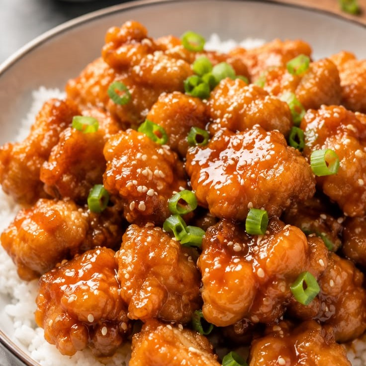

Em uma tigela, misture farinha, amido, sal e pimenta do reino. Adicione o ovo, a água e as 2 colheres de óleo e misture até virar uma massa em uma consistência semelhante a massa de panqueca.
Coloque os cubos de frango nessa massa e leve à geladeira por pelo menos 30 minutos e frite.
Em uma panela, aqueça as 2 colheres de óleo em fogo baixo. Refogue a pimenta, o gengibre e o alho por apenas ( não deixe queimar pelo amor de deus Allan)
Junte os açúcares, suco de laranja, vinagre e shoyu. Mexa até dissolver e levante fervura, abaixe o fogo e adicione a mistura de amido + água para deixar o caldo grosso (para não empelotar, mistura o amido e a água e depois coloque). Mexa sem parar até engrossar
Desligue o fogo, adicione as raspas de laranja e o óleo de gergelim. (As raspas de laranja e o gergelim vão servir como aromatizantes dessa receita, por isso a importância de colocar só no final)
Prove o final para ajustar ao seu paladar: quer mais doce? Adicionei mais açúcar (mais não exagere, esse frango tem que ser agridoce). Mais ácido? Vinagre. Mais salgado? Shoyu ou sal.
